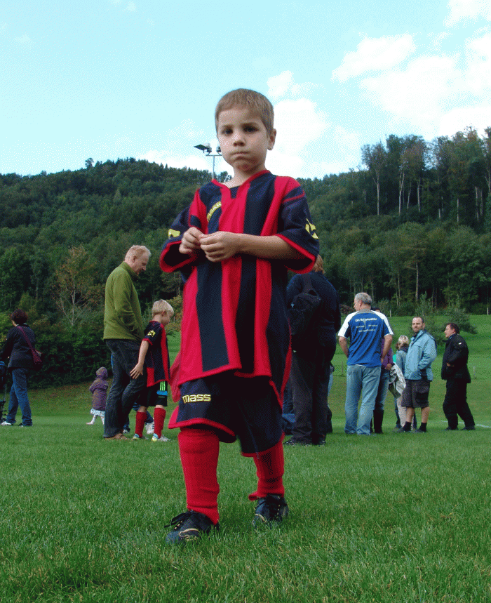
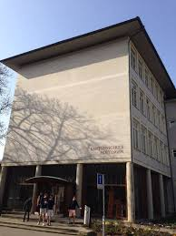
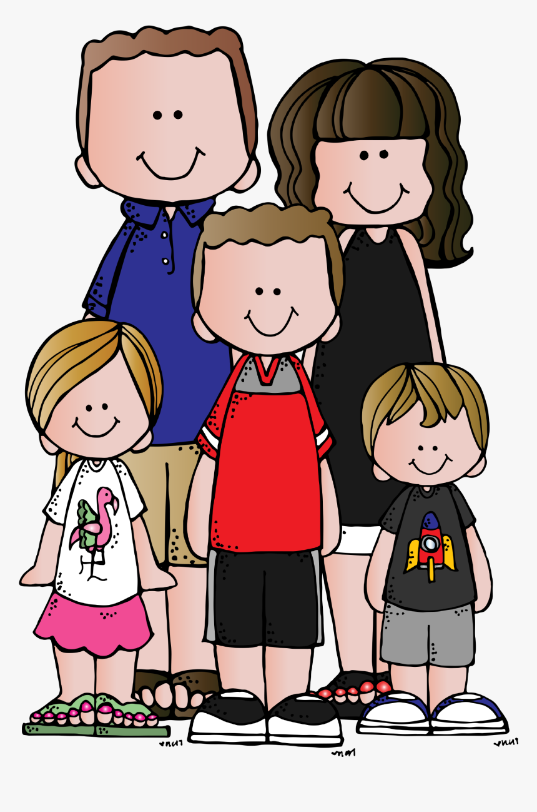

Hier erfährst du noch einige Dinge über mich. Es geht von Hobbies, bis zur Familie. Bei Fragen kannst du mich auch gerne hier über diese Seite kontaktieren.
Ich spiele seit über 12 Jahren beim FC Hausen am Albis. Dabei war fast jede Position. Mal war ich Stürmer, mal Flügel, Mittelfeldspieler, Aussenverteidiger, Innenverteidiger und defensiver Mittelfeldspieler. Im Moment bin ich im Mittelfeld oder im defensiven Mittelfeld am Spielen. Ich habe zweimal in der Woche Training und an den Wochenenden auch Spiele.
Zurzeit besuche ich die Kantonsschule Hottingen (KSH). Da bin ich daran eine Informatikmittelschule (IMS) zu absolvieren. Im Moment bin ich im dritten von vier Jahren. Im vierten Jahr habe ich allerdings keine Schule mehr, sondern werde ein Praktikum besuchen. An einem Tag in der Woche bin ich auch am Bildungszentrum Zürichsee (BZZ), wo ich meine Informatik-Module habe.
Meine Familie besteht aus meinen geschiedenen Eltern (Vater: 50, Mutter: 52, meinem grossen Bruder (19), meiner kleinen Schwester (15) und meiner kleinen Halbschwester (9). Ausserdem habe ich einen Hund namens Arany, Ich habe auch noch zwei Katzen, Shy und Merlin. Hier habe ich aus datenschutzrechtlichen Gründen kein Foto meiner Familie.
